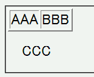
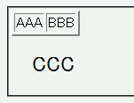

表要素を子孫に持つ要素でフォントサイズをキーワードや一部の単位（pxなど）で指定した場合、その指定は表要素に継承されない。
<style type="text/css">
div.a {
font-size: 24px;
}
</style>
<div class="a">
<table border="2">
<tr><td>AAA</td><td>BBB</td></tr>
</table>
<p>CCC</p>
</div>
| AAA | BBB |
CCC
div要素内はフォントサイズを24pxにしています。なお、このページは互換モードで表示させています。
WinIE6.0標準モード
WinIE6.0互換モード
ページ全体に共通するスタイルの指定はbody, th, tdの3要素に一括して行うことで、この不具合を回避することができます。
body, th, td {
font-size: ...
}
WinIE5.xおよび6.0互換モードでは以下のプロパティが親要素から表要素に継承しません。
WinIE6.0互換モードでは継承されません。標準モードでは継承されます。